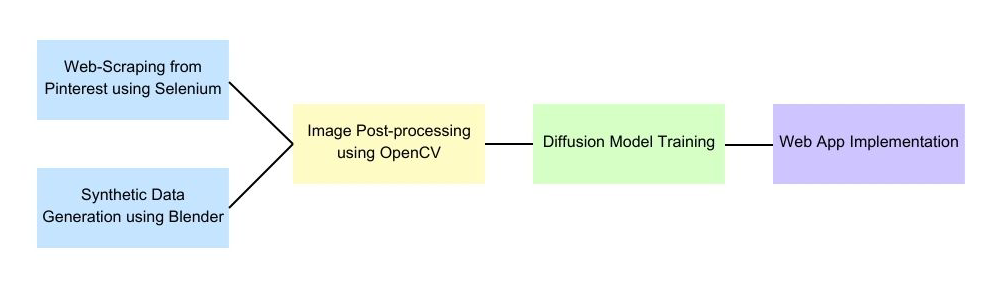
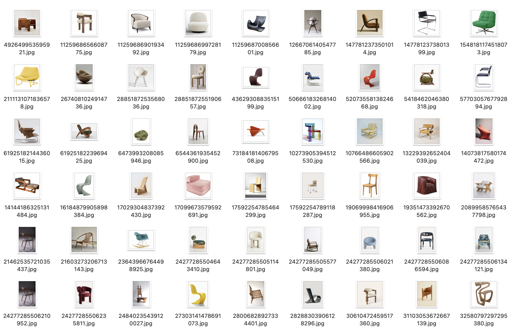
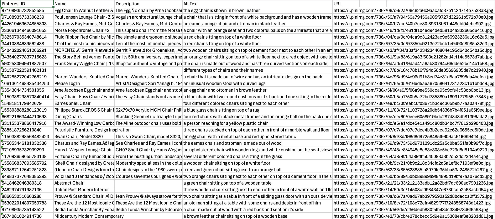
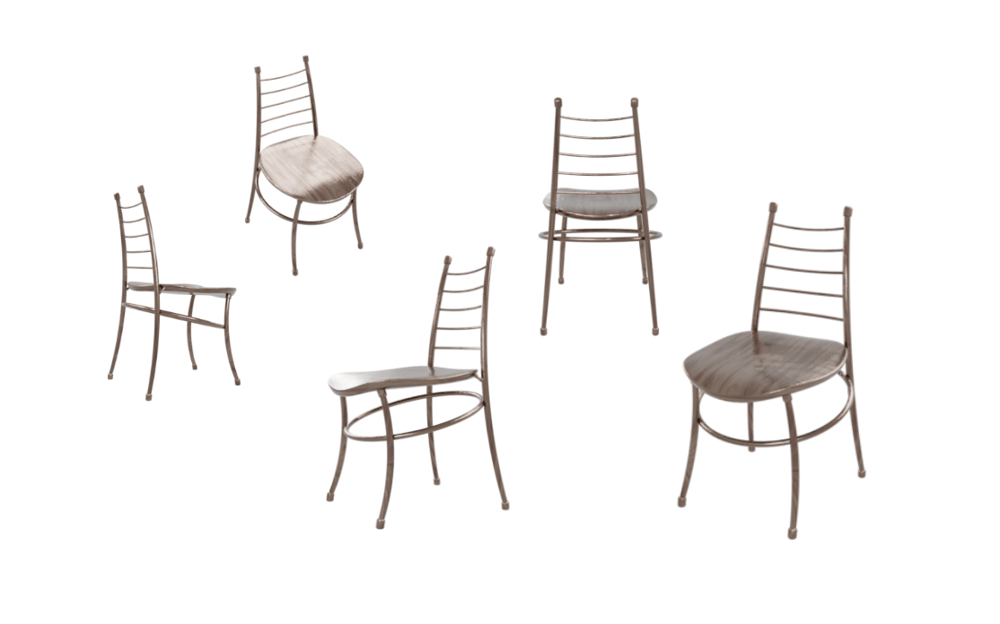
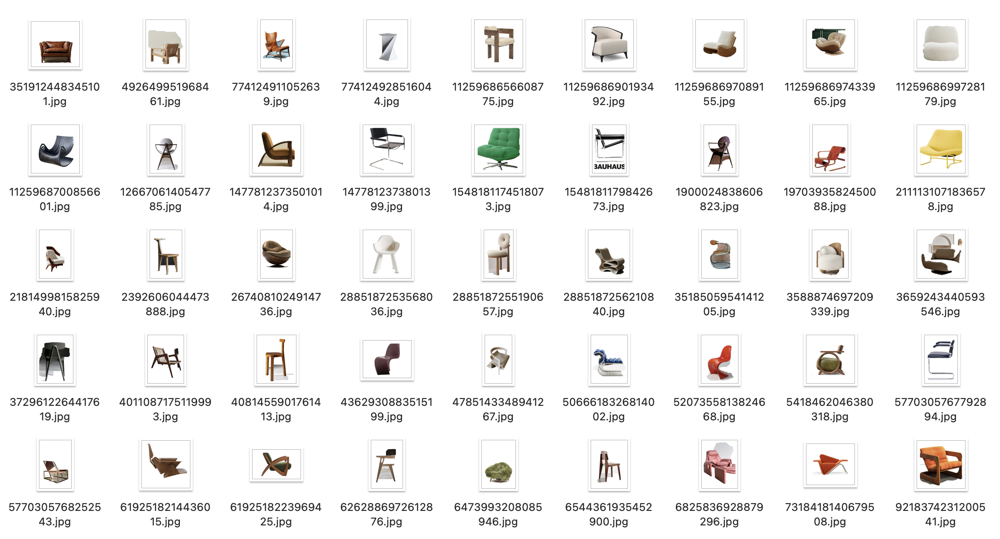
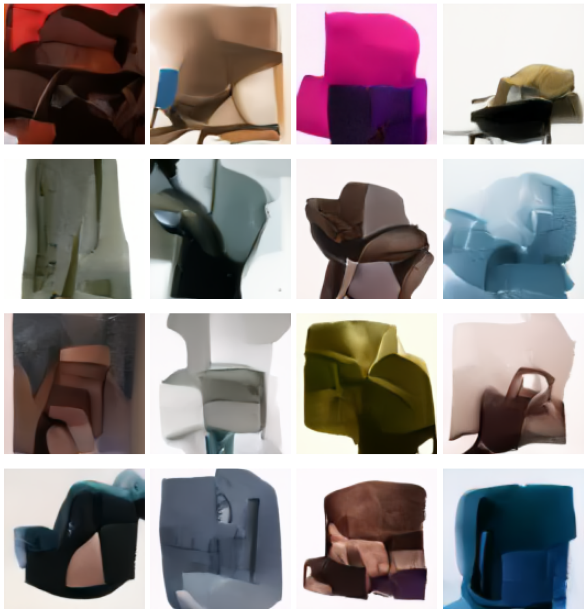

def scrape_pinterest(num_images=n):
# Navigate to search page
driver.get("https://www.pinterest.com/search/pins/?q=designer%20chair")
# Scroll and collect pins
# ...scrolling and pin collection code...
# Visit each pin page
for pin_id, alt_text in pin_data:
# Get chair name from <h1> in div[data-test-id='pinTitle']
# Get description from different possible locations
# Download image
# Save data to CSVOverview
Chairness is a web application designed to generate images of unique and creative chair designs. The application leverages a combination of web-scraped chair images from e-commerce platforms and synthetically generated chair images from 3D models using automated Blender scripts. These images are used to train a diffusion network, which powers the image generation process.
You can find the link to our Github repository here: https://github.com/shruaibylsh/chairness
This is a flow chart illustrating the structure of our project: 
Data Acquisition
Web-Scraping from Pinterest using Selenium
We implemented a custom scraper to collect chair images and metadata from Pinterest. The scraper navigates to search results for specified keywords such as “designer chairs” and collects: 1. Pinterest ID 2. Chair name 3. Description 4. Alt text 5. Image URL
The implementation focuses on finding pins with the specific CSS selector div[data-test-id=‘pin-with-alt-text’] and then visiting each individual pin page to extract more detailed information.
This is a pseudo-code for our scraper:
These are images of our scraped chairs and an example of the csv file we have compiled:  
Synthetic Data Generation using Blender
We then wrote a script that automates the generation of synthetic chair images using Blender, a powerful 3D rendering tool. It imports 3D chair models (e.g., .obj, .fbx, .blend, .gltf) and renders them from multiple angles and elevations to create a diverse dataset. The script sets up a Blender scene with a three-point lighting system, a camera, and a transparent background for high-quality renders. It also supports material variations, allowing for different textures and colors to be applied to the chair models, further enhancing dataset diversity.
The script processes each chair model by normalizing its size, centering it in the scene, and applying textures from a specified directory. It then renders the chair from 12 horizontal angles and 3 elevation angles, producing 36 images per model. GPU-accelerated rendering with Cycles ensures efficient and high-quality output. The resulting images are saved in PNG format with transparency, ready for use in training machine learning models.
Here is the pseudo-code for this process:
# Scene Setup
def setup_scene():
clear_existing_objects()
add_camera(location=(0, -3, 1.5), rotation=(75, 0, 0))
add_lights(key_light, fill_light, rim_light)
configure_transparent_background()
# Model Importing and Processing
def import_chair_model(filepath):
clear_existing_meshes()
import_model(filepath)
normalize_size(chair)
center_on_ground(chair)
return chair, materials
# Rendering
def render_chair_angles(chair, output_path, num_angles=12, elevation_angles=3):
for elevation in [15, 30, 60]:
for angle in range(num_angles):
set_camera_position(angle, elevation)
render_image(output_path)Here are some images we have generated through this script: 
Data Cleaning: Image Post-Processing using OpenCV
We perform image post-processing using OpenCV to remove backgrounds from chair images, a crucial step in preparing the dataset for training the diffusion network. The remove_background_grabcut function uses the GrabCut algorithm to segment the chair from the background by defining a bounding box. The segmented chair is placed on a white background, ensuring uniformity across the dataset. This preprocessing enhances dataset quality, making it easier for the model to learn chair designs.
The process_folder function automates background removal for all images in a folder, saving processed images to an output folder. This batch processing ensures efficiency and consistency, critical for training high-quality generative models. By standardizing the dataset, the code improves the model’s ability to generate unique and realistic chair designs.
Here is a pseudo-code that summarizes the logic and flow of our code:
# Pseudocode for Image Post-Processing Workflow
1. Define function remove_background_grabcut(image_path, output_path):
- Load the image from image_path.
- Initialize a mask and define a bounding box around the chair.
- Apply the GrabCut algorithm to segment the chair from the background.
- Create a mask to separate the foreground (chair) from the background.
- Place the segmented chair on a white background.
- Save the processed image to output_path.
2. Define function process_folder(input_folder, output_folder):
- Create the output folder if it doesn't exist.
- For each image in the input folder:
- Construct the input and output paths.
- Call remove_background_grabcut to process the image.
- Print a confirmation message for each processed image.
3. Main execution:
- Set the paths for the input and output folders.
- Call process_folder to process all images in the input folder.Here are the images we have processed using the code: 
Model Training: Diffusion Model for Chair Image Generation
We then fine-tune a pre-trained diffusion model to generate high-quality chair images from a dataset of approximately 900 examples. Diffusion models work by gradually denoising random noise into coherent images, learning to reverse a process that adds noise to data. We use transfer learning to adapt a pre-trained UNet2DModel from the diffusers library, freezing early layers to retain general visual features while fine-tuning later layers for chair-specific details. The model is trained to predict and remove noise from noisy images, enabling it to generate realistic chair designs.
A custom ChairDataset class is implemented to load and preprocess chair images, resizing them to 128×128 pixels and normalizing pixel values. The training loop adds noise to images, trains the model to predict this noise, and periodically generates sample images to monitor progress. A noise scheduler controls the diffusion process, ensuring smooth denoising. After training, the model generates clean, high-quality chair images by iteratively removing noise from random inputs.
Here are some parts of our pseudo-code:
# Dataset Preparation
class ChairDataset:
def __init__(self, root_dir, image_size=128):
self.image_files = find_images(root_dir)
self.transforms = Compose([
Resize(image_size), CenterCrop(image_size),
ToTensor(), Normalize([0.5], [0.5])
])
def __getitem__(self, idx):
image = load_image(self.image_files[idx])
return self.transforms(image)# Model Setup
def setup_diffusion_model(image_size):
model = UNet2DModel.from_pretrained("google/ddpm-celebahq-256")
freeze_layers(model, ["down_blocks.0", "down_blocks.1"])
noise_scheduler = DDPMScheduler(num_train_timesteps=1000)
return model, noise_scheduler# Training Loop
def train_diffusion_model(model, noise_scheduler, dataset):
for epoch in range(num_epochs):
for batch in dataloader:
noisy_images = add_noise(batch, noise_scheduler)
noise_pred = model(noisy_images, timesteps)
loss = mse_loss(noise_pred, noise)
optimize(model, loss)
if step % 500 == 0:
generate_sample_images(model, noise_scheduler)And here are a few examples of the chair images we have generated: 